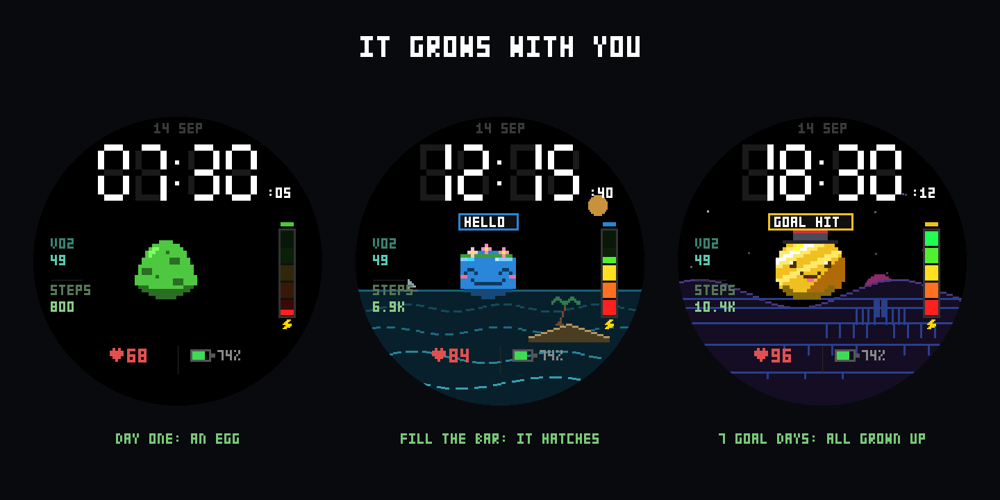
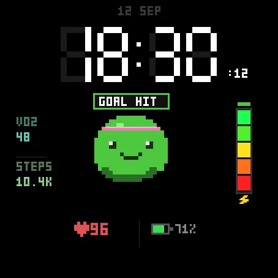
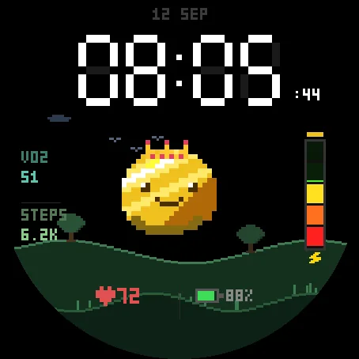
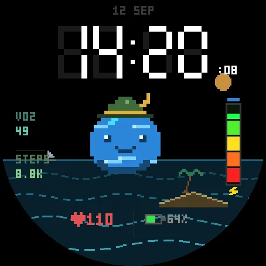
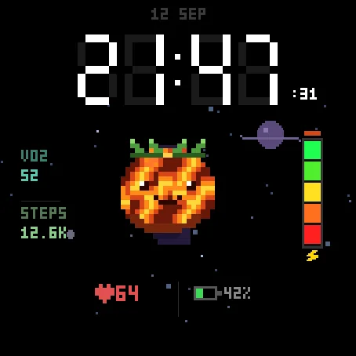
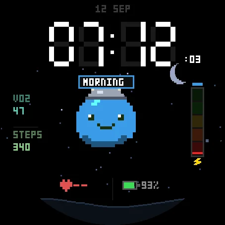
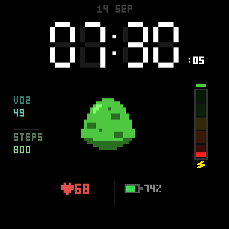
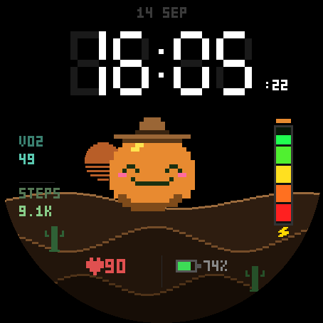
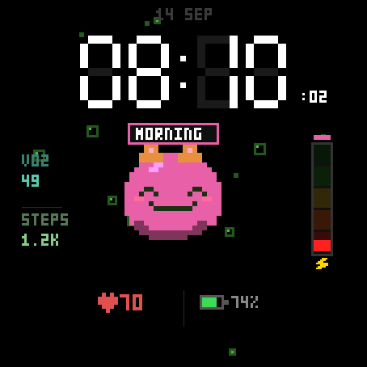

Hats, skies, skins - where to find them
Everything is on the watch, no phone needed: hold UP, open Watch Face, pick Slimmy Gochi Pro, press START, then Customize. Every hat, sky and skin is listed there with what it takes to earn it and how far along you are.
Slimmy Gochi Pro is a pixel-art watch face with a creature that reacts to your day and grows over months.
It starts as an egg
Fill the energy bar once and it hatches. Keep going and the baby becomes a full slime. Everything after that is earned.
Five ladders, five tiers each
Rewards are grouped into five ladders — walking, your best single day, climbing, calories burned, and consistency. A tier only opens once the previous one has been handed to you, so there are never more than five targets at a time instead of a wall of padlocks.
Hats and backgrounds alternate as you climb, so the next reward is always close enough to want.
- Walking 50k, 150k, 300k, 600k and 1,000,000 lifetime steps Big day 10 km, 15 km, 21.1 km, 30 km, 42.2 km in a single day Climbing 250 to 4,000 floors (active minutes if your watch has no barometric altimeter — nothing is out of reach)
- Burn 5,000 to 120,000 active kcal, resting metabolism excluded Streak 3, 7, 10, 20 and 30 days in a row
16 hats, 11 backgrounds, 10 skins — four of which are materials with their own animation: gold and diamond sparkle, magma glows, water ripples.
It has a face, and it means it
19 situations decide the expression, the pose, the colour and what it says together — so the face and the words always agree. It is cheerful in the morning, worried when your streak is about to break, delighted when the bar fills, and relieved rather than anxious while charging.
Steps are compared to what is reasonable at that hour and on that day of the week. Weekends start later and are judged later.
One point, three ways
100 steps, one floor or seven active calories all count the same. A stair climber progresses like a walker. Active calories are what is left after your resting metabolism is subtracted, so sitting still earns nothing.
Rest mode
Ill, injured, recovering? Turn on rest mode and your streak freezes instead of breaking. The slime sleeps in a bed and stops asking anything of you — but a good day is still celebrated. Nothing is ever taken away from you: no lost levels, no lost hats.
Honest by design
When a sensor does not answer, the face shows -- and not a filler number. Every supported watch was run in the simulator before being listed.
- Forerunner 165 / 165 Music / 265 / 265S / 570 / 965 / 970 Venu 2 / 2S / 2 Plus / 3 / 3S / 4 vivoactive 5 / 6 fenix 8 / 8 Pro / E, epix (Gen 2) / epix Pro (Gen 2)
- Instinct 3 AMOLED, MARQ (Gen 2), Descent G2 / Mk3, D2 Air X10 / Mach 1 / Mach 2, Approach S50 / S70
A separate always-on rendering: unlit segments are not drawn, one grey, and a one-pixel drift per minute against burn-in.
Permissions: your Garmin profile (to compute your resting metabolism from your height, weight and age) and sensor history (for Body Battery). Nothing leaves the watch.
Settings: slime colour, headband colour, hat, background, stay a baby or grow up, seconds on or off, always-on style, rest mode, and what fills the energy bar. All of them right on the watch (see the top of this page) as well as in Garmin Connect.